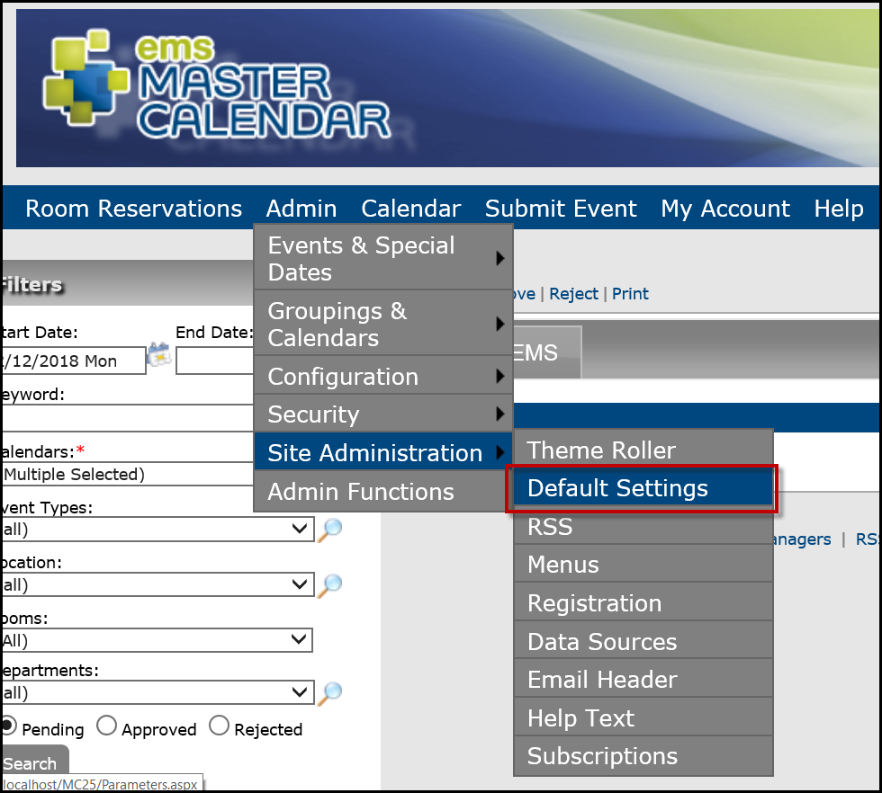

Customizing Your Master Calendar Site
Settings are available for customizing the appearance of your Master Calendar site, including themes, colors, icons, and site banners. You can also customize automated emails that are sent from many areas within Master Calendar, including subscriptions, reminders, and change notifications.
This section will provide information on:
- Customizing Themes, Colors, Site Banners, and Event Icons
- Customize Default Settings
- Customize RSS Menus
- Customize Registration
- Customize Data Sources
- Customizing Headers for Automated Emails
- Customize Email Text
- Customize Help Text
- Customize Subscriptions
Customizing Headers for Automated Emails
Automated emails can be sent from many areas within your Master Calendar application, including subscriptions, reminders, and change notifications. You can configure a customized email header for these automated emails, and you can also select a logo for these automated emails that is displayed in the upper right hand corner of the automated emails.
- On the Admin panel, point to Site Administration > Email Header.

- On the page that displays, you can Add Header Image or Edit the header description.

Note: The new logo must be an image in one of the following formats —.jpg, .gif, .png, .bmp, and .ico.
- Click Save.
Customize Email Text
Customize text for your automated emails from the Admin Panel.
- Navigate to Site Administration > Default Settings.

- From the Default Settings screen, manually navigate to the EmailText.aspx area.
- To do this, append the Master Calendar URL.
- Highlight the suffix of the URL that is displayed and replace the last section with /emailtext.aspx (e.g.,http://rgts01/MasterCalendarV8/emailtext.aspx).
- A page opens, allowing you to change the email text for the sections that are described.

- Click Save.